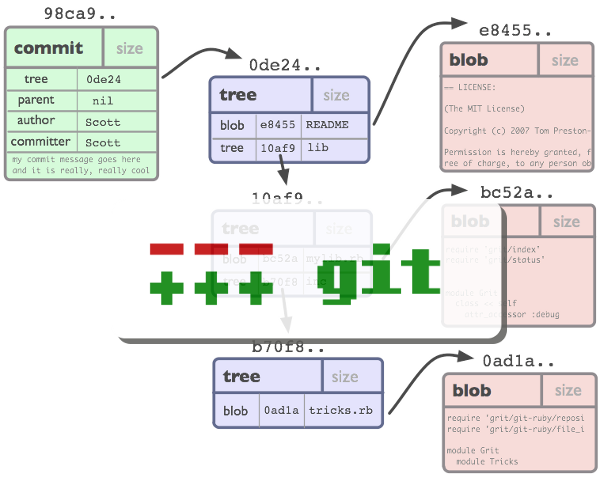
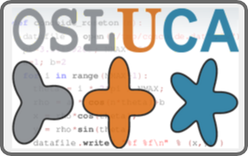
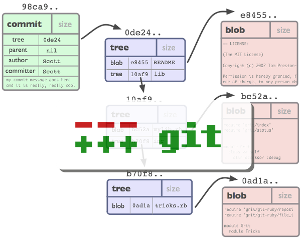
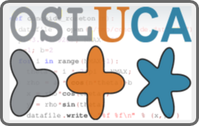
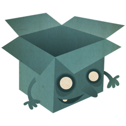
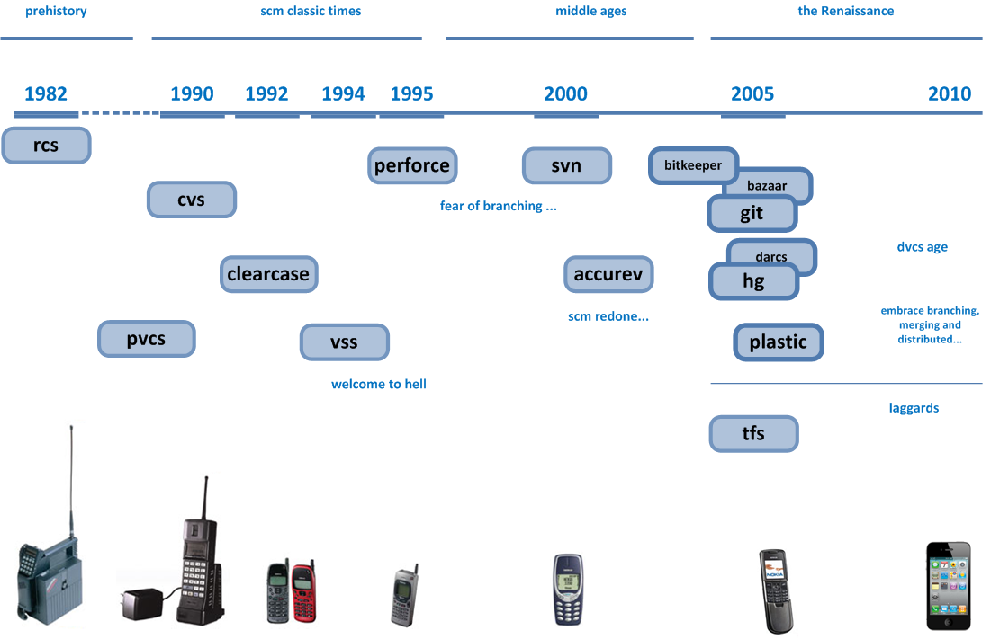

Desarrollo distribuido con GIT
Semana de la Ciencia 2011

Fabián Sellés Rosa
<fabian.sellesrosa@alum.uca.es>
Organizan:  Licenciado bajo: 
Desarrollo distribuido con GIT
Semana de la Ciencia 2011

Fabián Sellés Rosa
<fabian.sellesrosa@alum.uca.es>
Organizan:  Licenciado bajo:
Capitulo 1: Motivación


Capitulo 2: lo básico.
This is a slide with just text. This is a slide with just text. This is a slide with just text. This is a slide with just text. This is a slide with just text. This is a slide with just text.
There is more text just underneath with a code sample: 5px.
Any element with child nodes can build.
It doesn't have to be a list.
| Name | Occupation |
|---|---|
| Luke Mahé | V.P. of Keepin’ It Real |
| Marcin Wichary | The Michael Bay of Doodles |
| Name | Occupation |
|---|---|
| Luke Mahé | V.P. of Keepin’ It Real |
| Marcin Wichary | The Michael Bay of Doodles |


<script type='text/javascript'>
// Say hello world until the user starts questioning
// the meaningfulness of their existence.
function helloWorld(world) {
for (var i = 42; --i >= 0;) {
alert('Hello ' + String(world));
}
}
</script>
<style>
p { color: pink }
b { color: blue }
u { color: 'umber' }
</style>
<script type='text/javascript'>
// Say hello world until the user starts questioning
// the meaningfulness of their existence.
function helloWorld(world) {
for (var i = 42; --i >= 0;) {
alert('Hello ' + String(world));
}
}
</script>
<style>
p { color: pink }
b { color: blue }
u { color: 'umber' }
</style>
The best way to predict the future is to invent it.
A distributed system is one in which the failure of a computer you didn’t even know existed can render your own computer unusable.